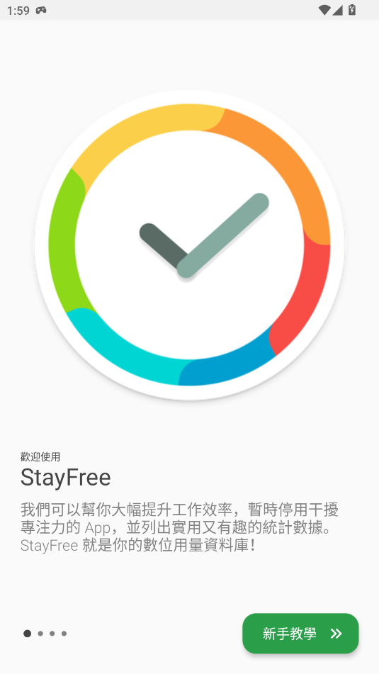

五分钟开始用 StayFree：把刷手机的时间抢回来
StayFree 是一款帮你看清并控制屏幕时间的工具，从下载安装到第一次设置拦截规则只需要几分钟。这篇文章带你从完全不懂到用起来。
如果你最近发现自己刷短视频不知不觉就过了半小时、打开电脑想查资料却先逛了一圈推荐流——那 StayFree官网 这款工具就是帮你把注意力夺回来的。这篇文章带你从完全不懂到用起来，不需要任何基础。
它到底是干嘛的
把 StayFree 想象成你手机和电脑上的一个"时间管家"：它安静地在后台记录你每天在每个 App、每个网站上花了多少时间，然后把这些数据画成清晰的图表让你一眼看明白自己的时间都去哪了。更重要的是，它不只是告诉你"你花了多少时间"——它还能帮你在你最容易失控的地方设一道缓冲：比如把 YouTube 的 Shorts 入口藏起来、给 TikTok 的发现页加个时间上限、或者在你想专心工作的时候把所有社交软件临时锁上。
简单说，StayFree 做三件事：追踪（告诉你现状）→ 拦截（切掉成瘾入口）→ 限制（设底线）。这三件事组合起来，效果比你靠意志力硬扛靠谱得多。
五分钟上手
从官方下载拿到安装包到第一次跑通，最短路径其实很简单。
第一步：安装并登录。StayFree 同时有手机 App（iOS 和 Android 都支持）、浏览器扩展（Chrome 和 Firefox）、还有桌面版。通常你先在手机上装一个，用邮箱或 Google 账号登录——这就是你的主账号。
第二步：让它开始追踪。第一次打开 App 的时候，StayFree 会弹出一个系统权限请求，要你允许它访问"应用使用情况"（Android 上的一个系统级权限，iOS 上叫"屏幕使用时间"）。这个权限是追踪的前提——不给的话 StayFree 就看不到你用了哪些 App。别担心，这些数据只存在你的账号里，不会上传给第三方。

第三步：先给一个最让你头疼的 App 设个拦截。比如大多数人第一个想管的就是 YouTube 或 TikTok。打开 StayFree App，找到"应用拦截"或"In-App Blocker"入口——这是 StayFree 最核心也最独特的功能：它不是粗暴地把整个 App 封掉，而是可以精准切掉 App 里的成瘾模块。
举个例子，如果你给 YouTube 开 In-App Blocker，你可以选择：隐藏 Shorts、隐藏首页推荐流、关闭自动播放——但搜索、订阅、播放列表这些正常功能全部保留。这样你想查教程视频、看你订阅的频道更新都不受影响，但算法拉你进无限滚动的入口全被切掉了。具体每个 App 能拦哪些模块、有哪些进阶参数，去 StayFree文档 翻一下就清楚了。
这三步走完，你已经跑通了最基础的使用闭环：StayFree 在追踪你的用量、你对一个高频干扰源设了第一道拦截。剩下的都是打磨。
上手后先玩这三个功能
刚装好别一下子把所有功能都开了——容易把自己搞晕。先碰这三个，体验最好。
一是 In-App Blocker：精准切入口而不是封整个 App。这是 StayFree 和其他屏幕时间工具最大的区别。你会发现，大多数同类工具要么只能给整个 App 设时间上限，要么直接封掉——但现实中你往往需要用 App 的一部分功能（比如 YouTube 上的教程），同时想避开另一部分（比如 Shorts）。In-App Blocker 就是专门解决这个矛盾的。对 TikTok 可以隐藏"发现页"和直播入口但保留"关注"标签；对 Reddit 可以隐藏热门榜但保留你订阅的子版块。你会看到：App 还是那个 App，但让你失控的入口不见了。
二是 Daily Limits：给最容易超时的 App 设个硬性底线。In-App Blocker 切掉的是吸引力，但有些时候你就是需要用某个 App（比如微信），这时候 Daily Limits 出场。给某个 App 设一个每日最大时长，到点之后 StayFree 会弹出提醒甚至直接限制打开——这是最后一道防线。
三是自定义浏览器新标签页。如果你主要的时间黑洞在电脑浏览器上，打开 StayFree 的浏览器扩展，启用"自定义新标签页"。从此以后你每次按 Ctrl+T 开新标签的时候，看到的不是浏览器默认的快捷方式页，而是 StayFree 的仪表盘：今天已经花了多少小时、用量最多的几个网站是什么、一个快速进入专注模式的按钮。这个设计的妙处在于——它把"开新标签"这个你每天可能做几十次的无意识动作，变成了一次有意识的停顿：我现在是真的要查资料，还是又想逛一逛了？

小白的三个常见疑问
"我装了两个设备，数据怎么合并？" 只在手机上装 StayFree，你看到的只是一部分——你可能在电脑浏览器上又花了 3 小时、平板上又花了 1 小时，这些独立看不足以说明问题。解决方案是"配对"：一台设备（通常是手机 App）作为主机，其他设备（浏览器扩展、桌面版、平板）通过一个 6 位配对码连接它。配对码是一次性的，用完就失效，不用担心安全问题。配完之后，所有设备的用量数据会汇总到你的账号，仪表盘上可以一键切换"单设备"或"全部设备"视图，Focus Mode 和拦截规则也会在所有设备上同步触发。
"In-App Blocker 支持国内抖音吗？" StayFree 的 In-App Blocker 主要面向国际版 TikTok 和 YouTube、Reddit、Twitter/X 这些主流海外应用。国内抖音（普通版、极速版、火山版）能不能识别取决于 StayFree 能否匹配到这些 App 的界面结构——你可以先装上去试一下，如果发现 In-App Blocker 里看不到抖音相关的拦截选项，那说明当前版本还不支持，退回到传统的应用拦截 + Daily Limits 组合就行，效果一样够用。
"如果我想临时关掉它呢？" 完全可以。StayFree 不会强迫你一直开着——Focus Mode 可以手动暂停、Daily Limits 可以临时豁免某个 App、In-App Blocker 的每个开关也可以单独关掉。它的定位是一个辅助工具而不是一个监狱看守。如果你今天有个紧急项目需要集中刷几个小时的 YouTube 教程，关掉拦截就好，之后再打开。关键是：你要的时候它在，不需要的时候它不碍事。
下一步
上面这些已经能覆盖 80% 的日常使用场景。等你用了一两周、对自己的屏幕时间规律有了更清晰的认识之后，可以试试跨设备配对（如果还没配的话）把手机、电脑、平板的数据全部拉通看——完整的画像出来之后，你可能会发现一些之前没注意到的隐藏时间黑洞。这套完整的使用说明和资源我分别同步到了 GitHub、Gitee 和 GitCode，哪个顺手用哪个。